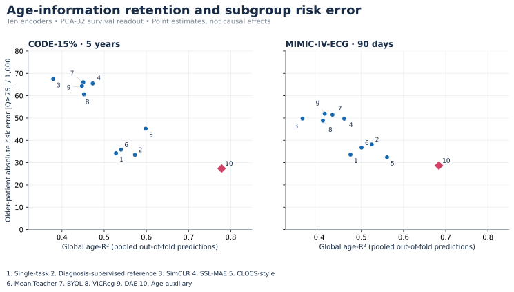
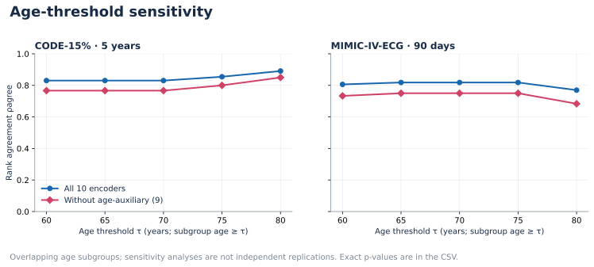
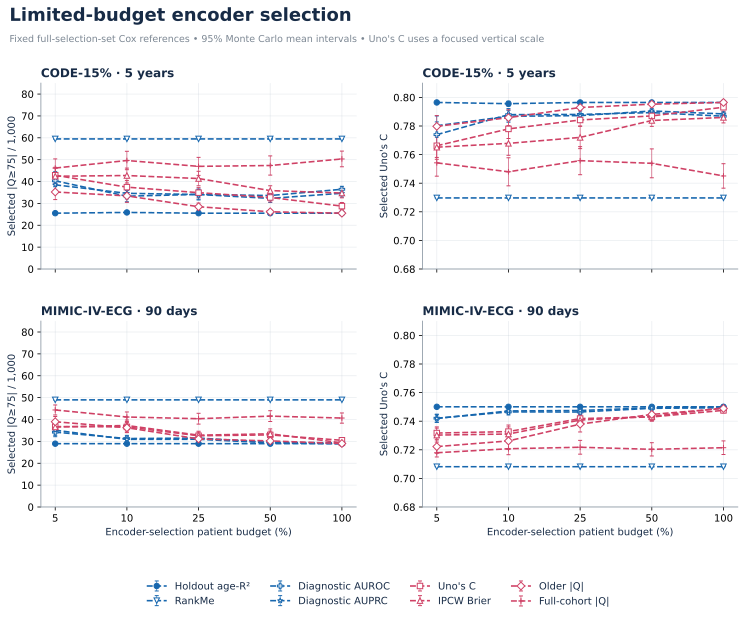
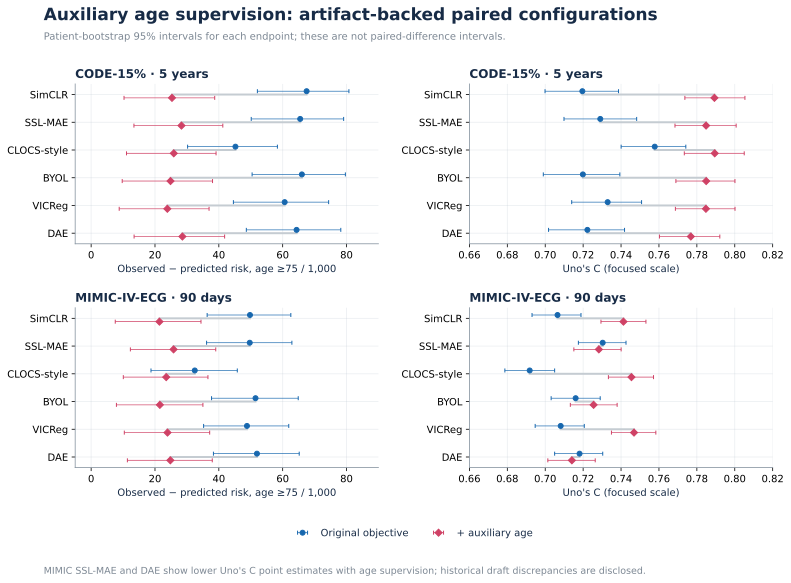
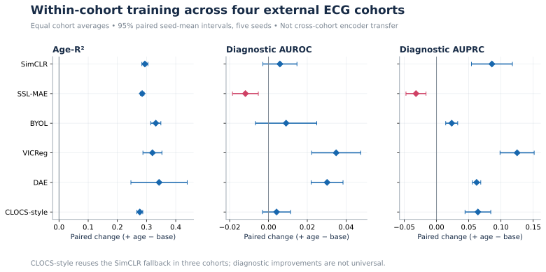

RESEARCH SNAPSHOT
Age retention and older-patient risk
Ten frozen encoders, two independently fitted survival readouts. Point estimates. The primary ρagree values are 0.855 and 0.818; excluding age-auxiliary gives 0.800 and 0.750.

ECG REPRESENTATION EVALUATION / v0.2.0
Toward Reliable ECG-based Survival Models: Evaluating Age-Information Retention
10 survival encoders2 survival cohorts4 within-cohort studiesAggregate results onlyResearch-use reference release. No patient data or trained weights. This page redraws saved aggregates; it is not an end-to-end reproduction or a clinically validated risk tool.
RESEARCH SNAPSHOT
Ten frozen encoders, two independently fitted survival readouts. Point estimates. The primary ρagree values are 0.855 and 0.818; excluding age-auxiliary gives 0.800 and 0.750.

RESEARCH SNAPSHOT
Thresholds define overlapping subgroups. Exact two-sided permutation p-values are unadjusted and available in the downloadable table.

RESEARCH SNAPSHOT
The age selector uses holdout age-R². Budgets restrict selection, not final Cox fitting. Intervals describe Monte Carlo uncertainty across valid repetitions; see CSV denominators. Diagnostic labels in MIMIC are report-derived, not adjudicated.

RESEARCH SNAPSHOT
All six displayed methods have smaller older-patient risk-error point estimates. Uno’s C is not uniformly higher. The artifact-backed SSL-MAE and DAE MIMIC values differ from the historical draft; see the release notes.

RESEARCH SNAPSHOT
Encoders are trained within each of four ECG cohorts. Age-information gains coexist with diagnostic trade-offs. These cohorts do not support the survival analyses reported above.
